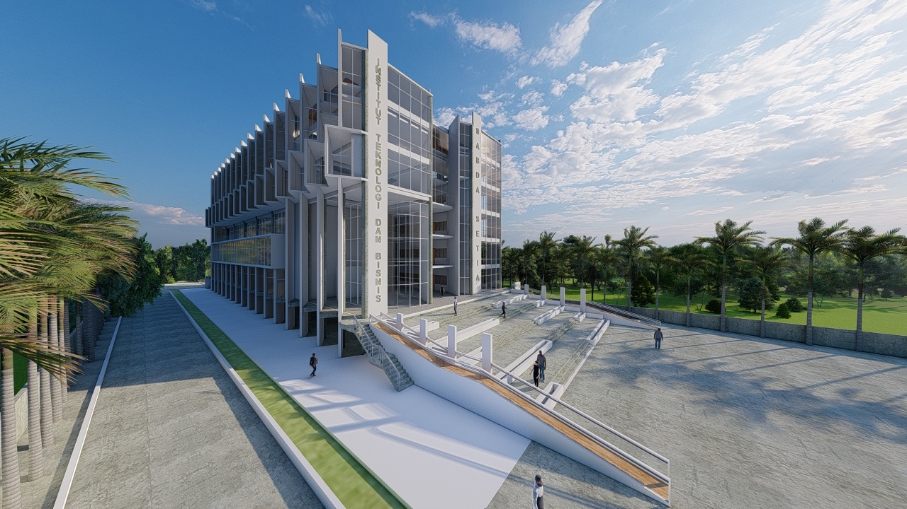

About Me
NIM: 23200016
Nama: Natalia Grace Harin
Hai Semua!, Selamat datang di Web yang berisikan biodata saya dan Kampus pilihan saya. Saya Natalia Grace Harin, Lahir di Senturang, pada tanggal 28 Desember 2003. Saat ini saya berstatus Mahasiswa di Kampus Institut Teknologi & Bisnis Sabda Setia.
Institut Teknologi & Bisnis Sabda Setia
VISI
Lembaga Pendidikan Tinggi yang berlandaskan nilai-nilai Kristiani dalam mempersiapkan sumber daya manusia yang unggul.
MISI
Mendidik dan melatih sumber daya manusia berkarakter, terampil, siap berkompetisi secara global dan membawa dampak positif bagi lingkungan sekitarnya.
PROGRAM STUDI

Sistem Informasi & Teknologi

Bisnis Digital

Kewirausahaan
Program Studi Pilihan Saya
Kampus Institut Teknologi & Bisnis Sabda Setia menghadirkan 3 Program Studi, seperti Sistem Informasi & Teknologi, Bisnis Digital dan Kewirausahaan.
Saya sendiri memilih program studi Bisnis Digital dikarenakan saya ingin memiliki keterampilan yang dibutuhkan dalam industri Digital
seperti digital marketing, e-commerce, dan teknologi informasi.